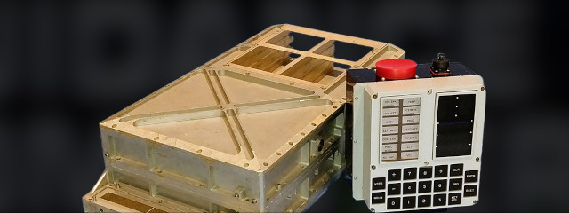

L'AGC : RETOUR SUR L'ORDINATEUR QUI A AMENÉ L'HUMANITÉ SUR LA LUNE
May 05, 2024

Clap de fin pour cette présentation, nous avons donné notre dernière session le vendredi 26 avril à MixIT. J’ai eu grand plaisir à présenter ce sujet si particulier avec mon co-speaker Olivier PONCET.
Abstract
Lundi 21 juillet 1969, l’humanité posait pour la première fois le pied sur la Lune. Cet exploit est le fruit de nombreuses avancées techniques et technologiques, notamment en électronique et dans le domaine de l’informatique alors naissant. Pour mener à bien leurs missions, les astronautes s’appuyaient sur l’AGC, l’ordinateur de bord du programme Apollo qui permettra de réaliser ces exploits.
Embarquez avec nous et découvrons ensemble sa conception et les rôles qu’il devait assurer au cours d’une mission jusqu’à la Lune. Nous nous replacerons dans le contexte historique, aborderons les moyens qui étaient alors à disposition des ingénieurs de l’époque, les avancées technologiques qui ont été nécessaires pour relever ce défi ainsi que les héritages que ce programme nous aura laissé, notamment dans le domaine de l’ingénierie logicielle.
Les sessions
- Sunny Tech - juin 2023 (pas de captation)
- DevFest Nantes - octobre 2023 (vidéo)
- BDX I/O - novembre 2023 (vidéo)
- DevFest Toulouse (keynote d’ouverture) - novembre 2023 (vidéo)
- TADx - février 2024 (vidéo à venir)
- Devoxx France - avril 2024 (vidéo)
- MixIT - avril 2024 (vidéo à venir)
Les slides
Si vous souhaitez visualiser nos slides, Olivier les héberge sur son site personnel :
L’AGC : retour sur l’ordinateur qui a amené l’humanité sur la Lune